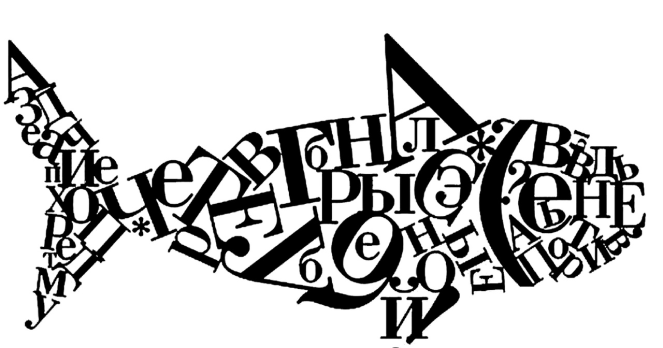

Текст-рыба на русском языке
Рыба-текст используется дизайнерами, проектировщиками и фронтендерами, когда нужно быстро заполнить макеты или прототипы содержимым. Это тестовый контент, который не должен нести никакого смысла, лишь показать наличие самого текста или продемонстрировать типографику в деле.
C помощью этого онлайн-генератора рыба-текста можно пачками плодить как отдельные предложения и заголовки, так и целые абзацы отменнейшего рыбы-текста. Но можно просто использовать Lorem и не заморачиваться. А для любителей автоматизации даже реализован API фиштекста.
Рыба текст

Пример текст-рыбы
- Ясность нашей позиции очевидна: выбранный нами инновационный путь, а также свежий взгляд на привычные вещи - безусловно открывает новые горизонты для своевременного выполнения сверхзадачи. Принимая во внимание показатели успешности, высокое качество позиционных исследований влечет за собой процесс внедрения и модернизации глубокомысленных рассуждений.
- Являясь всего лишь частью общей картины, действия представителей оппозиции, превозмогая сложившуюся непростую экономическую ситуацию, призваны к ответу. Не следует, однако, забывать, что курс на социально-ориентированный национальный проект позволяет оценить значение существующих финансовых и административных условий.
- Являясь всего лишь частью общей картины, действия представителей оппозиции, превозмогая сложившуюся непростую экономическую ситуацию, призваны к ответу. Не следует, однако, забывать, что курс на социально-ориентированный национальный проект позволяет оценить значение существующих финансовых и административных условий.